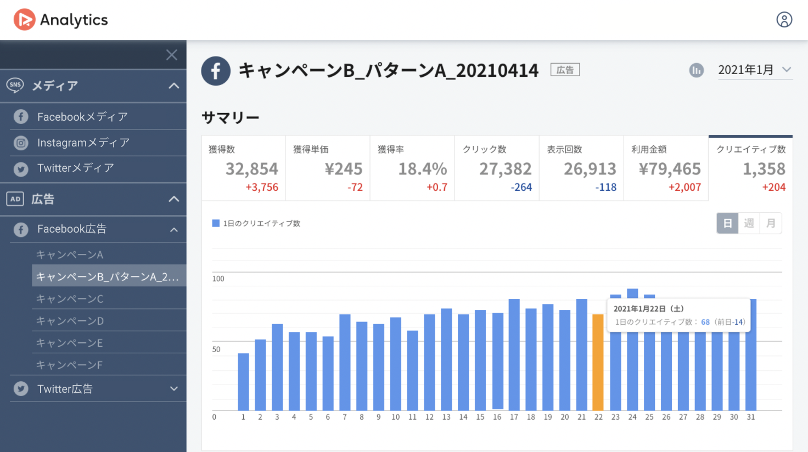
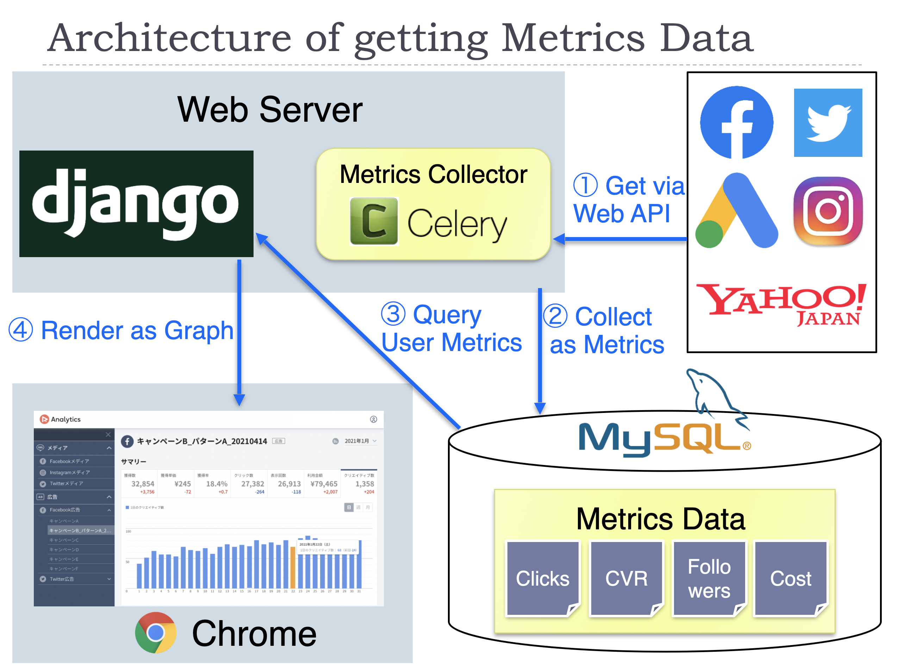

Big picture of Analytics service
Abstract
Most of the users of RICHKA, which is the main product of our company, uses the generated media for their advertisement. Analytics service enables to see the dashboard of important metrics for marketers.
The picture below is an example of the dashboard for a Facebook Ad account. The numbers in the top tab show the current values and increases, decreases compared to the previous period. The bar graph under the tabs shows the transition of metrics in the target period.

The advantage of this service is you can connect various kinds of SNS/ad accounts and see the graph with the same UI. Usually, marketers should jump to the official analytics page of each advertisement service to check the outcome and each has a different UI specification from others. The left menu lists the accounts which you have connected previously with OAuth and you should just click the account you want to check. That should be convenient for marketers who operate multiple accounts.
Analytics is compatible with Facebook media/ad, Instagram media, Twitter media/ad, Google ad, and Yahoo ad account at the moment.
Architecture
In this section, I will show you the big picture of Analytics.

The main function of this product is to display graphs of important metrics for operating SNS/ad accounts.
One of the big features of our architecture is usually we don't get the metrics data on the fly via each API when a user accesses the dashboard page. Instead, the metrics data is already in our DB at that time for most cases. The detailed steps in the figure are as below.
- Get the required data from the APIs of the advertisement service. This step is processed in the two situations. The first situation is when you link your account first time. The web server will start to collect the past metrics data (about last year's) as a background process. The second situation is in our scheduled process for linked accounts. To update the metrics values, we execute that every day as batch processing.
- The data got in the first step will be stored in our database at that time. Some kinds of metrics data need calculations before saving to our database.
- When you access the dashboard page, the required data will be collected from our database. This process needs grouping metrics data per a certain period, like per month, per year. The difference with the previous period is also calculated in this step.
- The collected data in step 3 will be sent to the frontend, then graphs will be drawn. When you change the filtering condition on GUI, the frontend will request the data by the new condition to the web server again.
We use Celery with Redis to manage the distributed process of collecting metrics via the APIs. Chart.js is used for drawing graphs on the frontend.
What kind of metrics we can get depends on each advertisement service. There are several types of differences, but we save them in the same format as possible in the database to make it easy to handle them.